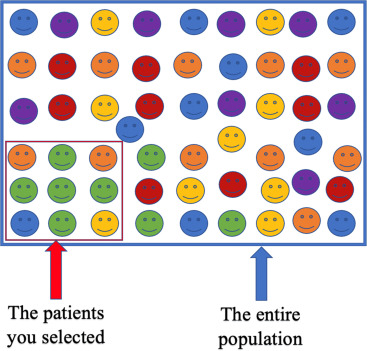

flowchart LR A[Capture / Collection] --> B[Storage / Management] B --> C[Processing / Transformation] C --> D[Analysis / Modeling] D --> E[Communication / Decision] classDef stage fill:#f4f4f4,stroke:#555,stroke-width:1px,color:#000,font-weight:bold; class A,B,C,D,E stage; subgraph Roles [Key Roles] DE[Data Engineer] AE[Analytics Engineer] DA[Data Analyst] DS[Data Scientist] BM[Business Manager] end DE -. supports .-> A DE -. builds pipelines .-> B AE -. transforms data .-> C DA -. explores data .-> D DS -. models data .-> D BM -. acts on insight .-> E style Roles fill:#f9f9f9,stroke:#ccc,stroke-width:1px,color:#333;
Statistics Session 01: Data Layers and Bias in Data
What is Data Analytics, Data Layers, Types of Biases
statistics
Overview
This chapter introduces the foundations of data analytics and statistical thinking.
Students explore how data becomes insight, what types of analytics exist, and how organizations move through the data lifecycle—from collection to decision-making.
By the end of the class, you should be able to describe what data analytics is, recognize the main forms of analytics, and identify how data-related roles interact within a company.
What Is Data Analytics?
Data analytics is the practice of examining data systematically to discover useful information, reach conclusions, and support decision-making.
In practice, it bridges raw data and business strategy. The process typically follows five stages:
- Data Generation – transactions, sensors, user interactions, or surveys produce raw data.
- Collection and Storage – data is gathered and kept in databases, data warehouses, or cloud systems.
- Processing and Integration – data is cleaned, formatted, and connected across sources.
- Analysis and Modeling – statistical or machine-learning methods reveal patterns and predict outcomes.
- Communication and Action – visualizations, dashboards, and reports communicate insights for business decisions.
This “data-to-insight” flow is iterative; every analysis generates new questions that feed the next cycle.
Business Applications of Data Analytics
Analytics supports decision-making across many domains:
- Telecommunications: predicting churn, optimizing network performance, or tailoring offers.
- Retail: analyzing baskets, forecasting demand, or optimizing pricing.
- Finance: assessing credit risk or detecting fraud.
- Marketing: evaluating campaign effectiveness and designing experiments (A/B tests).
- Healthcare: identifying risk factors or optimizing treatment outcomes.
The unifying theme is that analytics translates data into value by informing actions.
Types of Analytics
Different analytical approaches answer different questions.
| Type | Central Question | Typical Methods | Example |
|---|---|---|---|
| Descriptive | What happened? | Aggregation, visualization | Monthly sales by region |
| Diagnostic | Why did it happen? | Correlation, segmentation | Analyzing the effect of pricing on sales |
| Predictive | What might happen? | Regression, classification, forecasting | Predicting churn probability |
| Prescriptive | What should we do? | Optimization, simulation | Recommending personalized offers |
Explanation with Lego

Tip
Try fit your story according the above image.
The Data Lifecycle and Professional Roles
The data lifecycle describes how information moves through an organization and is transformed into insight.
- Capture / Collection: raw data is obtained from transactional systems, sensors, APIs, or external datasets.
- Storage / Management: engineers design and maintain databases, warehouses, or data lakes to store data efficiently and securely.
- Processing / Transformation: data is cleaned, structured, and enriched to prepare it for analysis.
- Analysis / Modeling: analytical teams explore data, test hypotheses, and build models that explain or predict outcomes.
- Communication / Decision: results are shared through dashboards, visualizations, and reports to support business actions.
| Role | Primary Responsibilities |
|---|---|
| Data Engineer | Builds and maintains the data infrastructure, pipelines, and integrations that collect and store raw data. |
| Analytics Engineer | Bridges engineering and analysis by transforming raw data into clean, documented, and reusable datasets—often using SQL, dbt, and data-modeling best practices. Ensures analysts and data scientists can work efficiently with trustworthy, well-structured data. |
| Data Analyst | Explores datasets, performs aggregations, builds dashboards, and answers business questions through descriptive and diagnostic analysis. |
| Business Analyst | The business analyst plays a similar role to the data analyst while bringing domain-specific knowledge to their work. A financial analyst, for example, is a type of business analyst who specializes in working with data from the finance industry. |
| Data Scientist | Applies statistical and machine-learning techniques to uncover patterns, generate predictions, and perform experimentation. |
| Business Stakeholder / Manager | Interprets and acts on insights, ensuring that data-driven decisions translate into measurable outcomes. |
Each role contributes to a shared goal: establishing a reliable, end-to-end analytics pipeline that converts data into decisions.
The Data Layers
Definition of data
Data is used in its broadest sense: observations, measurements and facts (both quantitative and qualitative) that serve as information or evidence.
Zero-party data
Data intentionally or proactively shared by audiences, such as:
- Responses to polls, surveys or quizzes
- Profiling details added to online accounts or loyalty programmes
First-party data
Proprietary data collected directly (with consent) via a company’s own channels. It typically captures behaviours and is a key marketing asset.
Common sources include:
- Digital interactions (website, apps)
- Customer Relationship Management (CRM) systems
- Content engagement
- Point-of-sale systems
- Transactions (accounting systems)
- Interactions with digital support and call centres
Examples of first-party data products:
- Sales performance metrics by region/country/category
- CRM extracts: contact info, purchase and interaction history for segmentation/personalization
- Loyalty/payment card purchase data showing behavioural patterns
- Email marketing metrics: open rate, click-through rate, subscriber behaviour
Second-party data
Data not collected by the business itself but associated with its customers/audiences and obtained via a partnership or contractual agreement.
Examples:
- Retail purchase data
- Market research and survey data
- Channel partner/supplier data treated as first-party within that relationship
Typical second-party sources in business:
- In-store shopper research
- Panels/retail share data (e.g., Kantar/Nielsen/IRI/Mintel)
- Brand and communications tracking studies; ad testing; in-depth interviews
- Web scraping (owned sites) and forums for sentiment, reviews, and competitive intelligence
Third-party data
Data collected by another entity that doesn’t have a direct link to your customers/audiences, often aggregated and licensed for use. (Note: privacy regulations like GDPR have tightened access and usage.)
Trusted third-party examples:
- Social platforms’ aggregated audience and behaviour insights
- External website analytics (e.g., Google Analytics) offering traffic, conversion, and interaction insights
- Vendors (e.g., Experian/Acxiom/Dun & Bradstreet) providing profiles, segmentation, and targeting datasets
- Open/public data (e.g., census aggregates)
In practice, most analytical teams draw from managed datasets in databases, platforms, or portals. These are often cleaned, contain business logic, and may blend multiple sources (e.g., CRM + ad-platform performance + third-party segments).
Definition of insight
An actionable insight connects observations to what matters and what to do next:
- What? — the observations from the data
- Why? — why it matters
- So what? — relevance and relative importance
- Now what? — the recommended action
Key reminders:
- A data point isn’t useful unless it links to why it matters.
- It isn’t insightful unless it answers so what (why it’s relevant/important).
- It isn’t actionable unless it leads to a feasible now what recommendation.

–
Definition of Reporting
Reporting refers to the systematic process of turning raw data into structured, interpretable information that supports monitoring, decision-making, and accountability across an organization.
In other words Reporting is the practice of:
- Collecting data from one or more sources
- Transforming and aggregating it according to agreed business rules
- Presenting it in a consistent, repeatable format (tables, charts, dashboards, PDFs, spreadsheets)
Importantkeyword
the key word is standardized
Definition of Storytelling
Storytelling is the creation and telling of stories. In business settings, it is a form of communication that adapts structures from wider storytelling to persuade audiences to think, feel and act.
Data storytelling applies storytelling techniques to communicate insights, actions and ideas that come from data (rather than the raw data alone). It starts by understanding the data available within the broader goals, then draws out meaning from the background noise to guide the right conversations and decisions.
Data Reporting vs Data Story
Reporting focuses on standardized, repeatable outputs that explain the data point itself.
Storytelling focuses on synthesizing evidence, reducing noise, and surfacing meaning and judgement to drive decisions and action. Visualization helps, but visualization alone is not a story.
| Dimension | Data reporting | Data storytelling |
|---|---|---|
| Primary focus | Communicates the data | Communicates the insight and recommendations |
| Approach | Standardized | Customized to the situation and audience |
| Audience effort | Requires a data-literate audience | Does the hard work for the audience |
| Core skills | Good data visualization skills | Strong critical thinking and creative communication |
Single Source of Truth (SSOT)
A Single Source of Truth (SSOT) is a practice in data management where one authoritative, trusted data source is designated for each data domain or metric.
All reports, dashboards, analyses, and decisions must rely on this source, ensuring consistency across the organization.
In simple terms:
one question \(\rightarrow\) one correct answer, regardless of who asks it or where it is asked.
Without SSOT, organizations face inconsistent numbers, duplicated logic, and loss of trust in data. With SSOT, data becomes a strategic asset, not a source of conflict.
Key benefits include:
- Consistency – The same metric (e.g., revenue, churn, active users) has the same value everywhere.
- Trust – Stakeholders trust data when numbers do not change between reports.
- Efficiency – Analysts and engineers stop re-implementing the same logic repeatedly.
- Faster decision-making – Less time spent reconciling discrepancies.
- Governance & compliance – Clear ownership and traceability of data definitions.
Note
We are going to re-address this topics during the Capstone Project.
Videos
- Statistical Thinking – Data Understanding and Preparation: Watch here
- Making Friends with ML: Watch here
- Storytelling with data Watch here
Articles
Books Used so far
- Thinking with Data – by Max Shron. Download here
- Storytelling in Marketing - by Caroline Florence Downlaod here
Assingment
Choose an industry or organization that interests you and answer:
- What is a recurring business question that data could help answer?
- Clearly state one repeated business problem or question.
- Explain briefly why this question matters to the organization.
- What data sources would be needed to address it?
- Internal data sources (e.g., transactions, customers, operations).
- External data sources (e.g., market data, competitors, environment).
- Briefly explain what each source provides.
- Which type of analytics (descriptive, diagnostic, predictive, prescriptive) is most common today at your organization?
- Identify the most commonly used analytics type.
- Explain how it is currently used (reports, dashboards, summaries).
- Which type of analytics would apply?
- Identify the most suitable analytics type for the business question.
- Explain why this type is more appropriate or valuable.
- What kind of decisions rely on data?
- Strategic decisions (long-term planning).
- Tactical decisions (campaigns, resource allocation).
- Operational decisions (day-to-day actions).
- Where do you see opportunities for improvement—better data, more automation, or clearer communication?
- Data quality or availability improvements.
- Automation of data pipelines or reporting.
- Better visualization or communication of insights.
- Sketch a simple flow diagram describing how data would move from source to insight.
- Data sources.
- Data collection and storage.
- Data cleaning and processing.
- Analysis and modeling.
- Insights and decision-making.
Types of Bias in Data
Understanding bias is crucial in data analytics, as it affects the reliability and fairness of insights and models.
Below are the main types of bias with examples and ways to avoid them.
As junior data analyist it’s easy to fall into the trap of believing that the data is objective, that it’s the raw truth, and that it can’t be spun or misinterpreted. If you were to believe these things, however, you’d be wrong.
Data is produced either by humans or by machines and algorithms that have been created by humans.
In other words, data lends itself to human bias, which can lead to poor decision-making or the adoption of false beliefs. Fortunately, there’s a solution to this problem, and while it may not eliminate 100% of the analytical pitfalls of bias, it can help you see the truth you seek whenever you initiate a data analytics project.
This solution is data ethics, and one of its guiding principles is transparency around the way data is sampled, tested, and processed.
Notedefinition
Bias can enter the data lifecycle at multiple stages.
To reason about it systematically, biases are grouped by where they originate and how they propagate downstream.
Data Coverage & Inclusion Biases
Biases at this stage affect representation.
If present, all downstream analysis is structurally compromised.
Sellection Bias:
- Sampling Bias
- Exclusion Bias
- Survivorship Bias
Selection Bias
Happens when certain groups are systematically excluded or included due to how data is selected.
Example:
A marketing campaign’s success is evaluated only on customers who opened emails, ignoring those who didn’t \(\rightarrow\) engagement appears artificially high.
How to avoid:
- Randomize inclusion criteria; avoid convenience filtering (e.g., “openers only”).
- Compare included vs. excluded groups; use propensity scores or re-weighting.
- Expand recruitment channels and reduce barriers to inclusion.

Sampling Bias
Occurs when the data collected is not representative of the entire population.
Example:
A telecom company predicts churn using data only from urban customers, ignoring rural ones. The model will likely perform poorly for rural areas.
How to avoid:
- Define the target population explicitly and sample across all key segments (e.g., urban/rural, device types).
- Use probability sampling where possible; if not, weight to population benchmarks.
- Monitor sample composition continuously and correct drift.

Survivorship Bias
Focusing only on successful cases while ignoring failures.
Example:
Analyzing only successful marketing campaigns inflates perceived effectiveness.
How to avoid:
- Track full cohorts, including churned/inactive or failed tests.
- Report denominator/attrition; analyze exits explicitly.
- Avoid filtering by “survived” outcomes in exploratory steps.

Exclusion Bias
Important variables are mistakenly left out during data collection or preprocessing.
Example:
An e-commerce model excludes device_type (mobile vs. desktop), missing behavior differences that affect conversion.
How to avoid:
- Map requirements with domain experts; maintain a
"must-have"variable inventory.
- Trace feature lineage; run ablation tests to detect missing signal.
- Iterate collection forms/ETL to capture omitted fields.

Data Collection & Measurement Biases
Biases at this stage affect how data is recorded and reported.
Even with correct population coverage, poor measurement distorts reality.
Measurement Biases:
- Measurement Bias
- Recall Bias
- Response Bias
- Observer Bias
Measurement Bias
Arises from inaccurate tools or methods used to collect data.
Example:
A survey app records 0 when users skip a question instead of missing, misleading analysts to think respondents selected zero.
How to avoid:
- Standardize definitions and validation rules; treat missing explicitly.
- Calibrate and test instruments; run overlap/parallel periods when switching tools.
- Include data-quality checks (range, type, logic) in ETL.
Recall Bias
Occurs when participants don’t accurately remember past events.
Example:
When asked how many times they visited a store last month, respondents under/over-report due to memory errors.
How to avoid:
- Shorten recall windows; use diaries or passive behavioral data where possible.
- Ask concrete, bounded questions (“in the last 7 days”).
- Provide anchors/examples to improve recall.
Response Bias
Participants give socially desirable or expected answers rather than truthful ones.
Example:
In a satisfaction survey, customers rate service higher to appear polite.
How to avoid:
- Use neutral wording and anonymity; avoid leading questions.
- Prefer behavioral measures over attitudinal when possible.
- Include validity checks (e.g., reverse-coded items).
Observer Bias
A researcher’s expectations influence data collection or interpretation.
Example:
An analyst expecting a new ad to perform better focuses on positive feedback and downplays negatives.
How to avoid:
- Blind analysts to treatment where feasible; pre-register analysis plans.
- Use objective scoring rubrics and inter-rater reliability checks.
- Automate extraction or labeling where appropriate.
Analysis & Modeling Biases
Biases at this stage affect interpretation, reasoning, and model learning.
They often amplify earlier data issues.
Analysis Biases:
- Confirmation Bias
- Availability Bias
- Historical Bias
- Algorithmic Bias
Confirmation Bias
Tendency to favor data that confirms existing beliefs or hypotheses.
Example:
A data scientist believes discounts improve retention and analyzes only high-discount months.
How to avoid:
- Write the research question and success criteria before analysis.
- Deliberately seek disconfirming evidence; run robustness checks.
- Use holdout periods and peer review.

Availability Bias
Recent or vivid events are over-weighted in judgment.
Example:
After widely covered plane crashes, people overestimate crash risk.
How to avoid:
- Use base rates and long-run averages; automate risk calculations.
- Seek counter-examples and historical context before concluding.
Historical Bias
Outdated or biased historical data perpetuates inequalities.
Example:
A credit model trained on years of biased lending data continues to disadvantage certain income groups.
How to avoid:
- Audit legacy datasets for representation and harmful proxies.
- Refresh training data; use time-aware validation.
- Apply fairness constraints and monitor subgroup performance.
Algorithmic Bias
Algorithms learn or amplify biased patterns from data.
Example:
A hiring model trained on past decisions that favored men continues to favor male applicants.
How to avoid:
- Remove or regularize proxy features; conduct fairness and drift audits.
- Evaluate with subgroup metrics (e.g., TPR/FPR parity) and add constraints.
- Retrain with de-biased data; use post-processing where lawful.
Reporting & Communication Biases
Biases at this stage affect how insights are presented and interpreted by decision-makers.
Reporting Bias
Selective presentation of data or results that favor a narrative.
Example:
A company highlights higher click-through rate but hides the drop in customer satisfaction.
How to avoid:
- Predefine the reporting bundle (primary + guardrail metrics).
- Show uncertainty, denominators, and counter-metrics.
- Publish full results or an appendix; avoid cherry-picking.
Bias Summary
| Bias Type | Key Cause | Example Context |
|---|---|---|
| Selection Bias | Non-random inclusion/exclusion | Only counting email openers |
| Sampling Bias | Non-representative sample | Using only urban data for churn model |
| Survivorship Bias | Ignoring failures or exits | Studying only successful campaigns |
| Exclusion Bias | Missing important variables | Omitting device type in conversion model |
| Measurement Bias | Faulty data collection or encoding | 0 recorded instead of missing |
| Recall Bias | Inaccurate memory | Self-reported store visits |
| Response Bias | Social desirability | Overrated satisfaction scores |
| Observer Bias | Researcher expectations | Analyst highlights positive feedback |
| Confirmation Bias | Favoring expected results | Ignoring non-discount periods |
| Availability Bias | Recency or vividness | Overestimating crash risk after news |
| Historical Bias | Biased legacy data | Credit score discrimination |
| Algorithmic Bias | Model amplifies biased patterns | Gender bias in hiring model |
| Reporting Bias | Selective result presentation | Hiding negative KPIs |